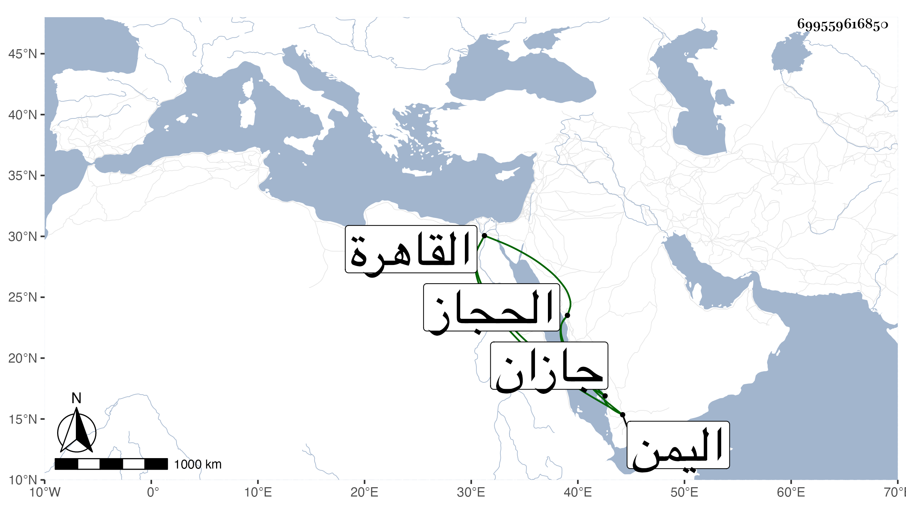

0902Sakhawi.DawLamic.ITO20230111-ara1.EIS1600.699559616850
Biography ID: 699559616850
670
علي بن بركات بن حسن بن عجلان بن صاحب الحجاز وشقيق صاحبه الجمال محمد ، قدم القاهرة سنة إحدى وسبعين مفارقا لأخيه فلم يلبث أن أعيد في موسم التي بعدها صحبة الكمالي بن ظهيرة ثم أعيد إلى المشاققة أيضا ودخل القاهرة في شوال سنة إحدى وثمانين من جازان من بلاد اليمن وكان أخوه سيره إليها محتفظا به فأكرمه السلطان ورتب له راتبا في كل يوم لا نسبة له مما يصل إليه من أخيه وحاول أخوه إرساله فما اتفق ، وهو فطن بهي كثير الأدب محسن لإنشاد الشعر متودد للعلماء والصالحين وقد زارني مرة بمنزلي ورأيت من لطافته ما امتلأت به عيني منه وما أحسن ما بلغني من إنشاده إما له أو لغيره :
| لولا الضرورات لم تنقل لنا قدم | إلى وجوه لها بالكفر إلمام |
مات في منزل سكنه بالقرب من جامع البشيري بعد أن أثكل ولده أبا القاسم من نحو ثمانية أيام وبعد أن تعلل أياما في فجر يوم السبت ثالث عشر رجب سنة إحدى وتسعين وصلي عليه في يوم بمصلى باب النصر ثم دفن عند ولده بحوش الأشرف برسباي عوضهما الله الجنة .
